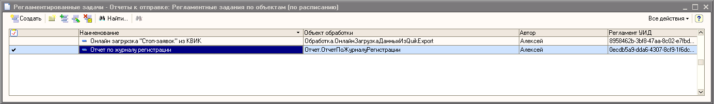
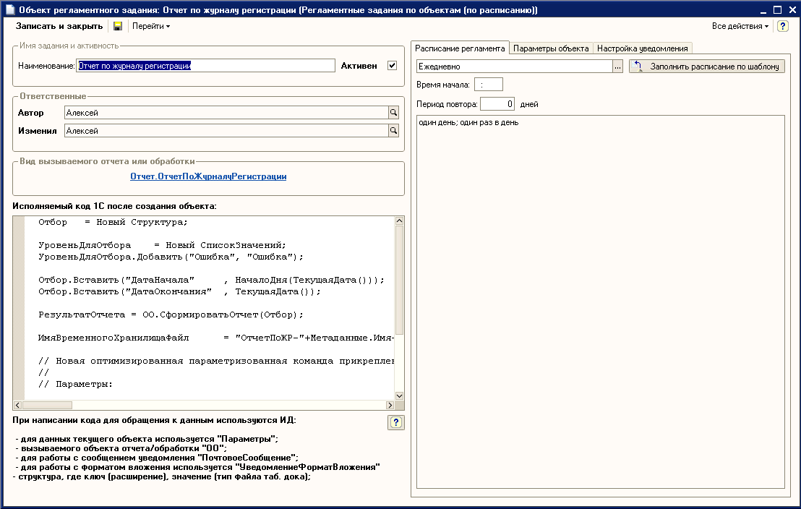
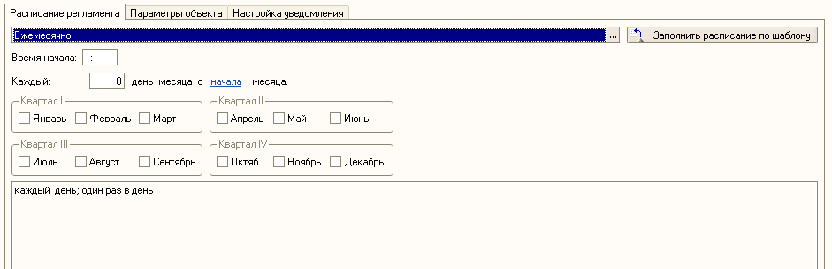
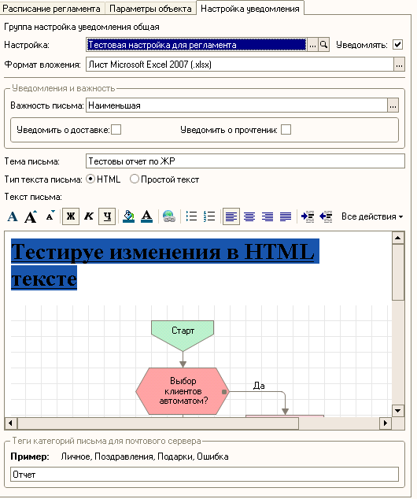

Функционал позволяет создать фоновое регламентное задание на основании "Обработки", "Отчета" или с исполнением "Произвольного кода 1С".
При открытии справочника "Регламентные задания по объектам (по расписанию)" открывается форма списка текущих регламентных заданий.

В данной форме списка видно отображаемые поля:
1) колонка отображающая"Активность" регламентного задани (в системе создаются лишь активные регламенты) в случае снятия флага "активно" в форме регламентного задания, фоновый объект типа "Регламентное задание" удаляется, чтобы не создавать доп. нагрузку на систему;
2) колонка отображающая "Наименование регламентного задания" - это произвольное наименование регламента указываемое пользователем при создании;
3) колонка отображающая "Объект обработки" (отчет/обработка) - в случае использования регламента с произвольным кодом без указания объекта, данное поле отмечено как "<!!!НЕ ОПРЕДЕЛЕН!!!>";
4) колонка отображающая первичного "Автора" создавшего регламент (в форме элемента справочника можно так же посмотреть последнего изменившего данный регламент или его настройки);
5) колонка отображает "УИД" регламентного задания.
При создании нового "Регламента" открывается форма настройки его параметров и расписания.

В настройках указывается:
1)Наименование регламента;
2)Активность регламента;
3)Если задание выполняется по объекту, то выбирается "объект обработки" при этом на вкладке параметры объекта автоматически заполняются данные о всех доступных параметрах объекта настройки которых можно заполнить;
4)Далее к каждому регламенту можно указать любой произвольный исполняемый код обработки, который вызывается после создания объекта и заполнения всех его параметров на основе указанных на закладке "Параметры объекта";а)для работы с параметрами элемента справочника "Регламентные задания по объектам" в ходе выполнения регламента можно использовать маску кода "Параметры" - Пример: "Параметры.Автор";
б) для работы с реквизитами и функциями указанного объета обработки используется "ОО" и далее после точки пишется вызываемый метод или имя реквизита - Пример: "ОО.СформироватьОтчет()";
в) для работы с объектом "Почтовое сообщение", который используется для отправки уведомлений пользователям и первоначально заполняется на основе настроек указанных на закладке "Настройки уведомления" (инициируется если указана галка "Уведомлять" и заполнены "Настройки" используется маска кода "ПочтовоеСообщение", так же на вкладке "Настройка уведомления" указывается формат прикрепляемых вложений если они будут формироваться;
г)для работы с форматом фложений используется объект "УведомлениеФорматВложения" - можно программно изменить в ходе регламента (тип "Структура", ключ - расширение файла в виде строки ".HTML", значение объект "тип файла табличного документа" - "ТипФайлаТабличногоДокумента.HTML")
д) так же для прикрепления уведомлений к "Почтовому сообщению используется специальная параметризованная процедура "ПрикрепитьВложение":// Новая оптимизированная параметризованная команда прикрепления вложения к уведомлению
//
// Параметры:
// - ВложениеОбъект - табличный документ;
// - ФорматЗаписиВложения - реквизит формат для записи вложения;
// - ПочтовоеСообщение - Сообщение куда прикрепляется вложение;
// - ИмяВложения - имя файла вложения;ПрикрепитьВложение(РезультатОтчета, УведомлениеФорматВложения, ПочтовоеСообщение, ИмяВременногоХранилищаФайл);
4) На закладке "Расписание регламента" указываются настройки расписания по которым будет исполняться текущий регламент:

5)На закладке "Настройка уведомлений" указываются все настройки письма:
